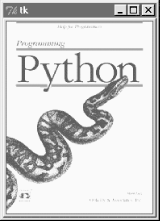
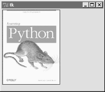
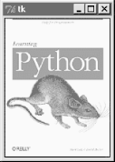
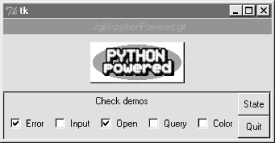
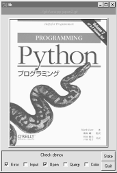
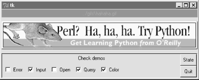

| I l@ve RuBoard |
|
7.9 ImagesIn Tkinter, graphical images are displayed by creating independent PhotoImage or BitmapImage objects, and then attaching those image objects to other widgets via image attribute settings. Buttons, labels, canvases, text, and menus can all display images by associating prebuilt image objects this way. To illustrate, Example 7-36 throws a picture up on a button. Example 7-36. PP2E\Gui\Tour\imgButton.pygifdir = "../gifs/" from Tkinter import * win = Tk() igm = PhotoImage(file=gifdir+"ora-pp.gif") Button(win, image=igm).pack() win.mainloop() I could try to come up with a simpler example, but it would be tough -- all this script does is make a Tkinter PhotoImage object for a GIF file stored in another directory, and associate it with a Button widget's image option. The result is captured in Figure 7-36. Figure 7-36. imgButton in actionPhotoImage and its cousin, BitmapImage, essentially load graphics files, and allow those graphics to be attached to other kinds of widgets. To open a picture file, pass its name to the file attribute of these image objects. Canvas widgets -- general drawing surfaces discussed in more detail later on this tour -- can display pictures too; Example 7-37 renders Figure 7-37. Example 7-37. PP2E\Gui\Tour\imgCanvas.pygifdir = "../gifs/" from Tkinter import * win = Tk() img = PhotoImage(file=gifdir+"ora-lp.gif") can = Canvas(win) can.pack(fill=BOTH) can.create_image(2, 2, image=img, anchor=NW) # x, y coordinates win.mainloop() Figure 7-37. An image on canvasButtons are automatically sized to fit an associated photo, but canvases are not (because you can add objects to a canvas, as we'll see in Chapter 8). To make a canvas fit the picture, size it according to the width and height methods of image objects as in Example 7-38. This version will make the canvas smaller or larger than its default size as needed, lets you pass in a photo file's name on the command line, and can be used as a simple image viewer utility. The visual effect of this script is captured in Figure 7-38. Example 7-38. PP2E\Gui\Tour\imgCanvas2.pygifdir = "../gifs/" from sys import argv from Tkinter import * filename = (len(argv) > 1 and argv[1]) or 'ora-lp.gif' # name on cmdline? win = Tk() img = PhotoImage(file=gifdir+filename) can = Canvas(win) can.pack(fill=BOTH) can.config(width=img.width(), height=img.height()) # size to img size can.create_image(2, 2, image=img, anchor=NW) win.mainloop() Figure 7-38. Sizing the canvas to match the photoAnd that's all there is to it. In Chapter 8, well see images show up in a Menu, other Canvas examples, and the image-friendly Text widget. In later chapters, we'll find them in an image slideshow (PyView), in a paint program (PyDraw), on clocks (PyClock), and so on. It's easy to add graphics to GUIs in Python/Tkinter. Once you start using photos in earnest, though, you're likely to run into two tricky bits which I want to warn you about here:
7.9.1 Fun with Buttons and PicturesI tried to come up with an image demo for this section that was both fun and useful. I settled for the fun part. Example 7-39 displays a button that changes its image at random each time it is pressed. Example 7-39. PP2E\Gui\Tour\buttonpics-func.pyfrom Tkinter import * # get base widget set
from glob import glob # file name expansion list
import demoCheck # attach checkbutton demo to me
import random # pick a picture at random
gifdir = '../gifs/' # where to look for gif files
def draw():
name, photo = random.choice(images)
lbl.config(text=name)
pix.config(image=photo)
root=Tk()
lbl = Label(root, text="none", bg='blue', fg='red')
pix = Button(root, text="Press me", command=draw, bg='white')
lbl.pack(fill=BOTH)
pix.pack(pady=10)
demoCheck.Demo(root, relief=SUNKEN, bd=2).pack(fill=BOTH)
files = glob(gifdir + "*.gif") # gifs for now
images = map(lambda x: (x, PhotoImage(file=x)), files) # load and hold
print files
root.mainloop()
This code uses a handful of built-in tools from the Python library:
Just for fun, this script also attaches an instance of the demoCheck checkbox demo bar, which in turn attaches an instance of the Quitter button we wrote earlier. This is an artificial example, of course, but again demonstrates the power of component class attachment at work. Notice how this script builds and holds onto all images in its images list. The map here applies a PhotoImage constructor call to every .gif file in the photo directory, producing a list of (file,image) tuples that is saved in a global variable. Remember, this guarantees that image objects won't be garbage-collected as long as the program is running. Figure 7-39 shows this script in action on Windows. Figure 7-39. buttonpics in actionAlthough it may not be obvious in this grayscale book, the name of the GIF file being displayed is shown in red text in the blue label at the top of this window. This program's window grows and shrinks automatically when larger and smaller GIF files are displayed; Figure 7-40 shows it randomly picking a taller photo globbed from the image directory. Figure 7-40. buttonpics showing a taller photoAnd finally, Figure 7-41 captures this script's GUI displaying one of the wider GIFs, selected completely at random from the photo file directory.[3]
Figure 7-41. buttonpics gets politicalWhile we're playing, let's recode this script as a class in case we ever want to attach or customize it later (it could happen). It's mostly a matter of indenting and adding self before global variable names, as shown in Example 7-40. Example 7-40. PP2E\Gui\Tour\buttonpics.pyfrom Tkinter import * # get base widget set
from glob import glob # file name expansion list
import demoCheck # attach checkbox example to me
import random # pick a picture at random
gifdir = '../gifs/' # default dir to load gif files
class ButtonPicsDemo(Frame):
def __init__(self, gifdir=gifdir, parent=None):
Frame.__init__(self, parent)
self.pack()
self.lbl = Label(self, text="none", bg='blue', fg='red')
self.pix = Button(self, text="Press me", command=self.draw, bg='white')
self.lbl.pack(fill=BOTH)
self.pix.pack(pady=10)
demoCheck.Demo(self, relief=SUNKEN, bd=2).pack(fill=BOTH)
files = glob(gifdir + "*.gif")
self.images = map(lambda x: (x, PhotoImage(file=x)), files)
print files
def draw(self):
name, photo = random.choice(self.images)
self.lbl.config(text=name)
self.pix.config(image=photo)
if __name__ == '__main__': ButtonPicsDemo().mainloop()
This version works the same as the original, but can now be attached to any other GUI where you would like to include such an unreasonably silly button.
|
| I l@ve RuBoard |
|